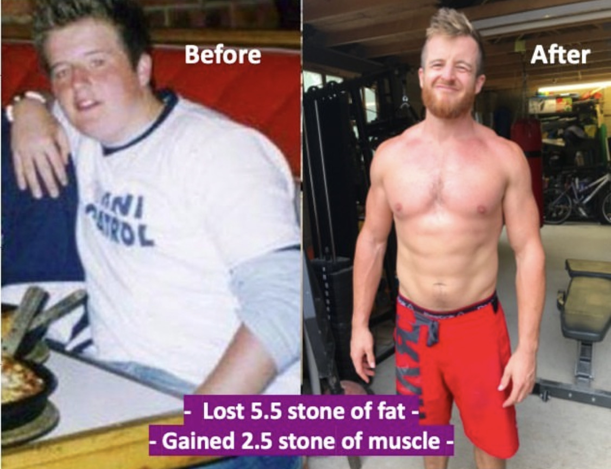
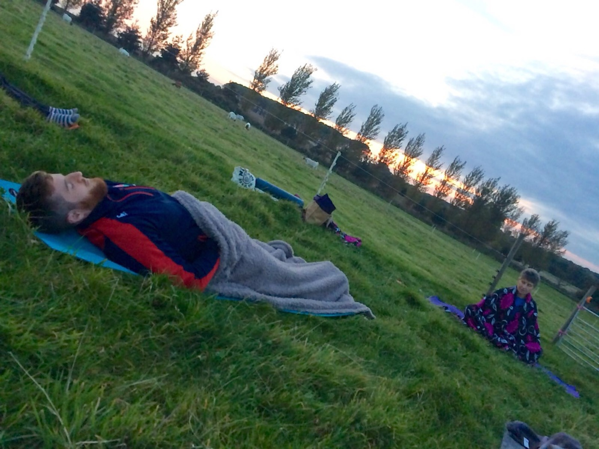

How Entrepreneurs and type-A people make themselves ill

Entrepreneurs, A-type personalities and athletes – please don’t do this…
These 3 types of people, which I would class myself as all 3 (or I was before I had kids), are the types of people to overdo it - by being a go-getter.
Let me tell you a quick story of how I got ill being a go getter…
18 years ago I underwent a body transformation, I lost 5.5 stone in 6 months, and transformed my life

That instilled in me an outcome mindset, put X amount of effort in, get Y amount of reward out
I saw this play out in the gym and with work, so started to apply the same theory to all areas of life, work, social life, travel, I went BIG with everything!
Pair this with a desire to be independent financially, a desire to make an impact on the world, and having read 100+ personal development books – I started to push my body and mind, hard.
Fast forward to my mid-twenties and I was running 2 companies, travelling the world, playing rugby, training 4-5x per week in the gym, speaking at expos, and generally not sitting still for a moment.
Absolutely fine in my 20s, all was good.
Once I hit my 30s I started to slowly get short bouts of burnout, coming in cycles as I’d work hard then need to rest, happening several times per year and it forcing me to rest because I got ill, or just couldn’t function properly.
Holidays were good for me and in my 20s I’d often take 4-6 per year, I’d switch off my phone and chill, but if I didn’t get those in, and as I got into my 30s, burnout would happen, repeatedly throughout the year.
Fast forward to 2020 and I had my first child, the pandemic hit, I got covid, then after a brutal physical event, I got long covid.
I believe I got long covid because of the stressed state I was in, my central nervous system (CNS) was ALWAYS ON (a classic issue seen in people with ME/CFS/Fatigue diseases)
When I used to “rest”, or have “a day off”, I would rarely be OFF
I thought I was resting because I wasn't working out that day, or I wasn’t packing my schedule in with 100 things, but I wasn’t really. I’d be in the garden all day, racing about somewhere to do something a bit extreme / fun, playing sport, just doing stuff, often at 70mph instead of 100mph.
This was fine in my 20s, by in my 30s, with kids, with everything else, I broke.
I now know the difference between rest and DEEP REST.

The kind of rest where your heart rate and blood pressure drops and you feel genuinely calm, where your hands don’t have a mild tremor because your CNS is going at 100mph despite you sitting still, where you’re not multi-tasking even when resting, when your brain isn’t working at 100mph thinking of what's coming, what you need to do, or just with “whats next in life”.
I now know, and I wish I’d known sooner.
Why am I telling you this?
Because I want you to do many of the things I did because I believe it’s a recipe to live an AWESOME LIFE.
I want you to do things, go on adventures, work hard to build the career you want, live life to the full, but I also want you to understand what deep, true rest looks like
When you’re OFF, be off, not flying about doing stuff at 100mph still
And half of that battle is giving yourself permission to fully rest, and knowing that is a good thing. With zero guilt attached to it.
I’m now so in tune with my CNS from this experience that I can start to feel when I am speeding up, I now take immediate action to slow myself down because otherwise the speeding up just keeps going (it feels like I have programmed my CNS to work at that pace, so it has a form of muscle memory to happily perform at 100mph), and going and I then feel myself getting buzzed, wired, sleep is then affected, and I can feel old symptoms come back as that 100mph approach to life starts to negatively affect me.
Be a go getter.
Be a high achiever.
Be everything you want to be.
But PLEASE know what rest looks like for your body, know the signs that it needs it, and have the strength to see the advantages in slowing down, so you can speed up again
Trust me, you don’t want something like long covid / ME / CFS / adrenal dysfunction for 18 months of your life. It was a dark, horrible period of my life that took a lot of patience and over £5000 in health bills to get me out of that state.
I’m now on TRT (testosterone replacement therapy) and I think it's because of this lifestyle, I pushed my body, my CNS, my hormones so much that something broke, and that’s my normal testosterone function. Which is something that is happening now in men, at a younger and younger age. And we can argue it’s because of the lifestyle that many are leading, the hustle in all areas of your life mentality.
Sure, hustle, but pair that hustle with genuine rest, with zero guilt for doing so. In fact, feel the pleasure in giving your body deep, genuine rest.
What does REST look like for me now?
1. Meditation several times per week, often in front of a red light lamp or in a sauna
2. Not multi-tasking, doing one thing, then the rest, being present at all times
3. Not having my phone as much when I’m with my kids (linked to point 2)
4. Not working more than 7 hours per day
5. Prioritising sleep above all else
6. Simply knowing I don’t need to do things at 100mph
7. Getting out in nature lots
8. Rarely doing anything stressful or taxing on the mind in the evening so I increase my chances of a good nights sleep
9. Be present in all I do, choosing the slower, more aware lane in life
10. Never feeling guilty for doing all of this, knowing it's me looking after me
I’m still AWESOME, just going a little slower now ✌🏻
Want more insights from my story and the AWESOME journey I’ve been on? Grab my book “How to live an Awesome Life” HERE.